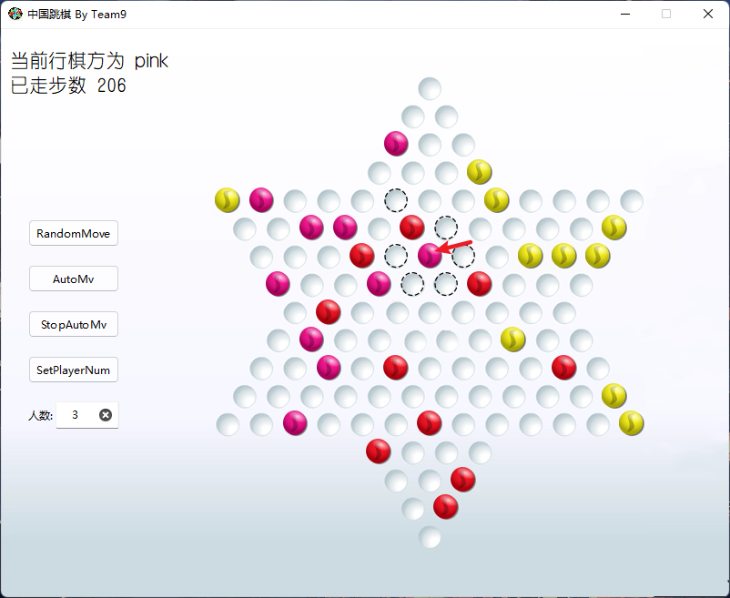
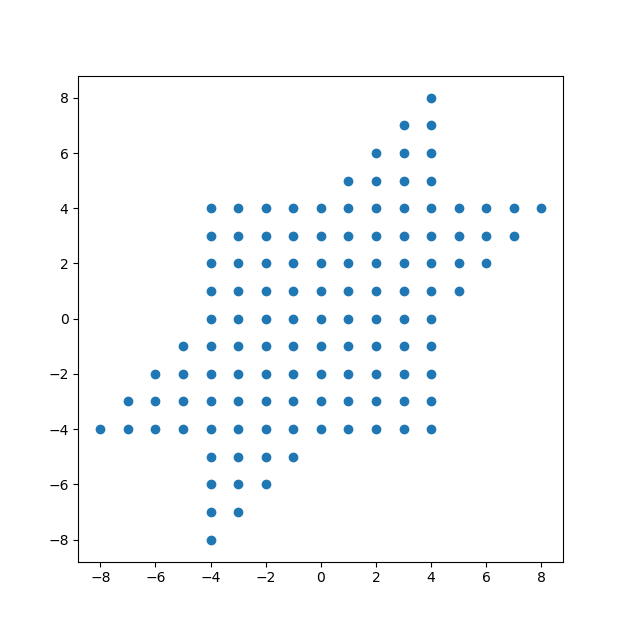
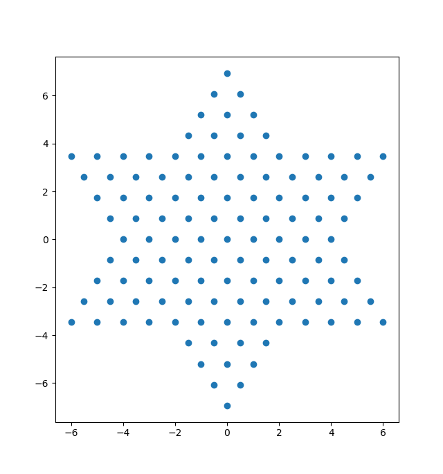

第一阶段总结¶
功能分析¶
跳棋游戏的基本功能¶
- 友好的图形界面
- 支持 1, 2, 3, 4, 6 人游戏
- 支持 AI 托管
- 支持不同玩家在局域网联机
跳棋规则¶
- 相邻移动
- 相邻跳跃
- 允许连跳，但是移动和跳跃不满足相继的条件
- 不允许不相邻跳跃，或者说一般的等距跳跃是不被允许的
- 不允许轮空
- 不做消极游戏判断
- 按照完赛先后排名
游戏流程设计¶
等待房准备¶
- 玩家首先进入等待房间，此时玩家可以修改自己的昵称
- 随后玩家选择游戏桌坐入，坐入后自动进入棋盘(下棋界面)
加入房间，准备开始¶
- 开始游戏前每个玩家可以自由选择座位方位
- 开始游戏前每个玩家可以指定位置加入机器人
- 开始游戏前每个玩家可以选择游戏人数（1, 2, 3, 4, 6, 自动），默认为自动，自动会优先选择向上最近的一个合法游戏人数。棋盘人数和游戏设定人数的差用托管机器人填补
开始游戏¶
- 每个玩家都可以点击“开始游戏”开始游戏
- 开始游戏后如果玩家的座位方位不符合规则会按“相对位置不变”调整，自动添加的机器人会出现在最后
- 开始游戏后房间会拒绝其他玩家的加入
游戏中¶
- 玩家选择棋子后可以获得合法落子位置提示
- 玩家可以随时启用托管或获得托管的建议行棋方式
- 托管的智能程度可通过设置定义
理想设计，可能会因为接口的问题放弃多人的选座功能
效果展示¶

实现细节¶
跳棋底层逻辑¶
跳棋坐标¶
以 $$ \hat{i}=(1,0)\ \ \hat{j}=(\frac{1}{2},\frac{\sqrt{3}}{2}) $$ 为基底建系，则棋子可以有唯一的整坐标，通过 [i,j] 矩阵可以方便地实现像素坐标和棋盘坐标的互转
 
落子合法性判断¶
在本地，我们会通过下文的合法落子位置搜索找到所有可以落子的位置并显示虚线提示框。而只有虚线提示框是可点击的，所以我们保证了本地用户发出的所有信号只能是合法的。
处理联机的请求时，我们预计直接 O(n) 扫一遍落子位置即可，考虑到对方发送的信号应当合法，所以我们应该只会处理一次判断，预处理不见得高效。
合法落子位置搜索¶
间隔跳版本¶
-
通过 BFS 搜索，先将选择的棋子加入队列
-
以队首棋子 u 为出发点，枚举棋盘上的其他棋子，获得等距跳的落子位置，然后判断以下条件
-
落子位置是否在界内
- 落子位置是否有别的棋子占用
- 枚举棋盘上所有棋子判断:出发点和落子位置之间是否有除了中转棋子之外的其他棋子
- 落子位置是不是已经被搜索过
- 如果判断合法则加入队列
- 其他棋子枚举完后 u 出队
- 不断重复 2-4 直至队空
相邻跳版本¶
将枚举范围限定到相邻棋子即可，这样的效率可能不是非常高，但这里没有效率需求
算法部分的同学会在算法部分给出更高效率的实现
跳棋棋盘交互界面(即不涉及多人的部分)¶
模块层次¶
Marble : 棋子/提示
Player ：玩家
ChessBoard：棋盘
成员的包含关系： ChessBoard->Player->Marble
Marble¶
Marble 继承了 QLabel，以实现
- 点击事件：当且仅当棋子的父对象即玩家当轮处于激活态时 clickable=True。回调 ChessBoard 层面的函数，以选择棋子（当棋子被点击时）或选择落点（当提示位置被点击时）
- 图标显示（棋子/提示虚线框）：使用 QPixmap 实现
- 位置移动：略
- 移动动画：使用 Qt 封装的动画库 QSequentialAnimationGroup 和 QPropertyAnimation 实现。事实上为了更好的显示效果，我们在合法落子位置搜索那里保存了跳跃路径，所以此处的移动动画将会重现棋子的跳跃过程
Player¶
值得一提的是为了实现上的方便，我们抽象出了一个提示玩家，它负责管理提示棋子（显示为虚线框）
ChessBoard¶
负责处理 - 玩家轮次抵换 - 汇合一般玩家棋子的点击和提示玩家棋子的点击信息，以控制玩家棋子的移动 - 选择棋子后显示合法落子位置
游戏程序流程简述¶
初始化阶段¶
棋盘创建按钮，标签和玩家对象 (包括抽象出来的 hintPlayer )，玩家创建棋子对象 ( hintPlayer 初始时不拥有棋子)。
此时 ChessBoard 保存的 activatedPlayer 指向 player[0]，selectedChess 指向 nullptr
游戏阶段¶
玩家可以点击棋盘上的棋子，此时只有 activatedPlayer 对它自己的棋子的点击会触发回调，点击后会传递所点击棋子的地址给 ChessBoard，此时 ChessBoard 的 selectedChess 就指向所点棋子。
紧接着 ChessBoard 会调用 getHint() 来对这个棋子计算合法落子，并动态地将合法落子抽象成一个棋子加入到hintPlayer。getHint() 结束后调用 showHint() 显示提示棋子。
此时若玩家继续点击正常棋子，hintPlayer 的棋子会被删除。若重新点击的是刚才的 selectedChess 则 selectedChess 会重新指向 nullptr，若改变主意点其他棋子，则会重新计算并显示 hint。
若玩家想行棋，则它应该点击 hintPlayer 拥有的棋子 v，点击后会触发回调，ChessBoard 层面会把这个棋子 v 作为参数传给 selectedChess 这个棋子的成员函数 moveToWithPath()。值得注意的是 getHint() 时创建的每个 hint 棋子保存了它从 selectedChess 到最终点时经过的路径，所以传递 hint 棋子就可以让玩家棋子实现路径移动。
移动结束后会判断该玩家是否已经完赛。
判断结束后调用 nextTurn() 和 updateLabelInfo() 进入下一个玩家的轮次。
实现难点分析¶
回调 or connect or addTo()¶
在棋子点击回调 ChessBoard 层面的函数时发现如果 ChessBoard 的构造出现了 Player 而 Player 的构造出现了 Marble，最后 Marble 又需要 ChessBoard 的地址会导致死循环。
我们的解决方法是在所有 .h 文件中不 #include 父类的头文件，而是简单声明。然后使用 addTo 函数在对象初始化完成后再把地址信息传递下去。
事实上应该也可以使用函数指针，或者 Qt 的 connect 函数来实现，不过我们这种实现会可以降低未来的代码量，防止每次都要新建一个回调传下去。